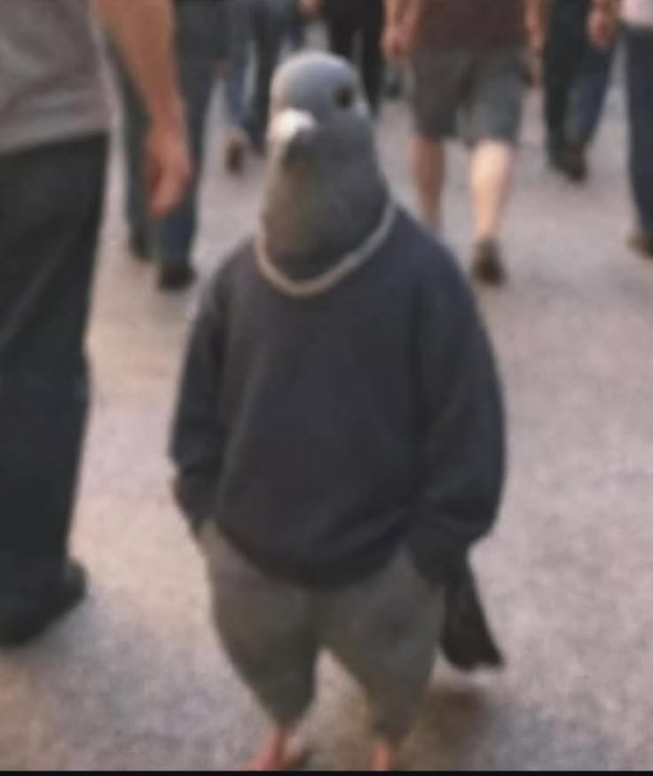

so a lil more abt me since u clicked in — outside of buildin stuff im prettyy much always doin smth active, runnning is like my reset button, i genuinely feel offf on days i dont get a run in. been tryinggg to pick up watercolor too, im terribleee at it rn but its relaxing so i dont rlly care lol. music is basically always on in the background, if u ever catch me quiet im probably just vibin to smth n zoned out. n socially im out here jus vibin w frends whenever i can, nothing crazyy just good company n good energy.
as for the smaller things — my current rotation is a lotta Daniel Caeser, tooo much red bull (probably not healthyy but oh well), n a lil bit of valorant when i need to unwind after starin at a screen all dayy for other reasons. i also got a pet i love way tooo much (say hii to em on the sidebar lol). honestly this whole about page exists bc i wanted a place to jus be a lil more me outside the homepage — less abt the projects n more abt like, actual me. so yeahh, thats kinda it, hope u stick around n check out the rest of the site!!
